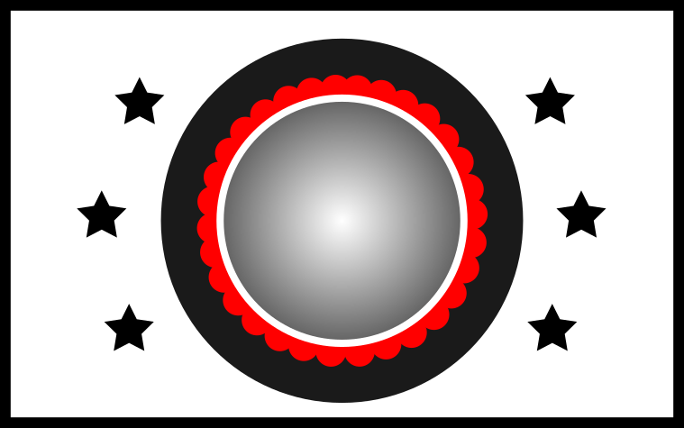

<!DOCTYPE html>
<html>

<head>
    <title>Pavlovian Study</title>
    <meta http-equiv="Content-Type" content="text/html; charset=utf-8">
    <script src="jsPsych/jspsych.js" charset="utf-8"></script>
    <script src="plugins/jspsych-instructions.js" charset="utf-8"></script>
    <script src="jsPsych/plugins/jspsych-fullscreen.js" charset="utf-8"></script>
    <script src="jsPsych/plugins/jspsych-html-keyboard-response.js" charset="utf-8"></script>
    <script src="jsPsych/plugins/jspsych-image-keyboard-response.js" charset="utf-8"></script>
    <script src="jsPsych/plugins/jspsych-survey-multi-select.js" charset="utf-8"></script>
    <script src="jsPsych/plugins/jspsych-survey-text.js" charset="utf-8"></script>
    <link href="jsPsych/css/jspsych.css" rel="stylesheet" type="text/css">
    </link>
    <!--<link href="stroop.css" rel="stylesheet" type="text/css">-->
    </link>
</head>

<body>
    <script>
        var debug = true;
        /* create timeline */
        var timeline = [];

        /* ========= PARAMETERS ==================== */
        var ntrials = 1; // testing
        var gocost=-1; // go-cost (added to reward in case of go)
        var pwin_if_correct=0.7; // win-contingency
        var rew_magnitude=10; // reward magnitude (multiplied by -1 for losses)

        var duration_fixation=1000;
        var duration_ticket=1000;
        var duration_prompt=1000;
        var duration_feedback=1000;
        /* ========= /PARAMETERS ==================== */

        var subject = jsPsych.randomization.randomID(12);
        var datetime=Date().toLocaleString();
        // record the condition assignment in the jsPsych data
        // this adds a property called 'subject' to every trial
        jsPsych.data.addProperties({
            subject: subject,
            date: datetime
        });

        // data is being sent to sigmund for storage
        function saveData(name, data) {
            var xhr = new XMLHttpRequest();
            xhr.open('POST', 'http://sigmund.hsl.uit.no/storedata.php'); // 'write_data.php' is the path to the php file described above.
            xhr.setRequestHeader('Content-Type', 'application/json');
            xhr.send(JSON.stringify({ filename: name, filedata: data }));
        }

        if (!debug) {
            timeline.push({
                type: "fullscreen",
                fullscreen_mode: true,
                message: "Velkommen! <p>Vi skal nå bruke hele skjermen din slik at du ikke blir distrahert av andre ting.<p>",
                button_label: "Fortsett"
            });
        }
        var instructions1 = {
            type: "instructions",
            pages: [
                "<div class='instructions'><H1>Velkommen til dette eksperimentet!</H1><p>\
                    Vennligst sitt komfortabelt ca. 60 cm fra skjermen. <p>\
                    Mens du gjennomfører eksperimentet er det ikke lov å bytte vindu eller gjøre andre ting på PCen din. Hvis du allikevel bytter vindu under eksperimentet, vil eksperimentet sluttes automatisk og du vil bli bedt å starte på nytt.\
                    Trykk på høyrepil på tastaturen eller klikk på 'neste' for å fortsette.</div>",
                "<div class='instructions'></img> <p> \
                    Du skal bruke fire taster gjennom dette eksperimentet.<p>\
                    Disse tastene er 'd','f','j' og 'k'. <p>\
                    Vennligst plasser din venstre langfinger på 'd' og venstre pekefinger på 'f'. <p>\
                    På samme måte, plasser din høyre pekefinger på 'j' og høyre langfinger på 'k'.<p> \
                    Måten du plasserer hendene dine på, er vist på bilde øverst.<p>\
                    Trykk på høyrepil på tastaturen eller klikk på 'neste' for å fortsette.</div>",
                "<div class='instructions'>\
                    Hver av de fire tastene hører til en spesifikk farge:<p>\
                    <ul>\
                    <li> d = <font color='red'>RØD</font></li>\
                    <li> f = <font color='green'>GRØNN</font></li>\
                    <li> j = <font color='blue'>BLÅ</font></li>\
                    <li> k = <font color='yellow'>GUL</font></li>\
                    </ul>\
                    For å teste tastene, kan du prøve de nå...</div>"
            ],
            show_clickable_nav: true,
            button_label_previous: "tilbake",
            button_label_next: "neste"
        };
        timeline.push(instructions1);

        var conditions = ["gowin", "nogowin", "goavoid", "nogoavoid"];
        var ticket_imgs= ["pics/ticket1.png", "pics/ticket2.png", "pics/ticket3.png", "pics/ticket4.png"];
        var condition_to_ticket = {
            "gowin": "pics/ticket1.png",
            "nogowin": "pics/ticket2.png",
            "goavoid": "pics/ticket3.png",
            "nogoavoid": "pics/ticket4.png"
        }
        var condition_to_response = {
            "gowin": "go",
            "nogowin": "nogo",
            "goavoid":"go",
            "nogoavoid":"nogo"
        };
        var condition_to_winavoid = {
            "gowin": "win",
            "nogowin": "win",
            "goavoid":"avoid",
            "nogoavoid":"avoid"
        };

        var go_button = 'space';

        /* ========= TRIAL DEFINITION ==================== */
        var fixation = {
            type: 'html-keyboard-response',
            stimulus: '<div style="font-size:60px;">+</div>',
            trial_index: jsPsych.timelineVariable('trial_index'),
            choices: jsPsych.NO_KEYS,
            trial_duration: duration_fixation,
            data: jsPsych.timelineVariable('data'),
            on_finish: function (data) {
                data.trial_part="fixation";
            }
        }
        var ticket = {
            type: "html-keyboard-response",
            stimulus: jsPsych.timelineVariable('stimulus'),
            choices: jsPsych.NO_KEYS,
            trial_duration: duration_ticket,
            data: jsPsych.timelineVariable('data'),
            on_finish: function (data) {
                data.trial_part="ticket";
            }
        }
        var prompt = {
            type: "html-keyboard-response",
            stimulus: '<div style="font-size:60px;">?</div>',
            choices: [go_button],
            trial_duration: duration_prompt,
            response_ends_trial: false,
            data: jsPsych.timelineVariable('data'),
            on_finish: function (data) {
                data.trial_part="prompt";
                var resp;
                if(data.key_press===null){
                    resp="nogo";
                } else {
                    resp="go";
                }
                data.response=resp;
                data.correct=condition_to_response[data.condition]==resp;

                // calculate reward
                data.win_if_correct=jsPsych.randomization.sampleWithReplacement([0,1],1,
                                [1-pwin_if_correct, pwin_if_correct])[0];
                var reward=0;
                if(data.response=="go"){
                    reward+=gocost;
                    if(data.condition=="gowin"){
                        reward+=data.win_if_correct*rew_magnitude;
                    } else if (data.condition=="goavoid"){
                        reward+=(1-data.win_if_correct)*(-1)*rew_magnitude;
                    } else if (data.condition=="nogowin"){
                        reward+=(1-data.win_if_correct)*rew_magnitude;
                    } else if (data.condition=="nogoavoid"){
                        reward+=data.win_if_correct*(-1)*rew_magnitude;
                    }
                } else {
                    if(data.condition=="gowin"){
                        reward+=(1-data.win_if_correct)*rew_magnitude;
                    } else if (data.condition=="goavoid"){
                        reward+=(data.win_if_correct)*(-1)*rew_magnitude;
                    } else if (data.condition=="nogowin"){
                        reward+=(data.win_if_correct)*rew_magnitude;
                    } else if (data.condition=="nogoavoid"){
                        reward+=(1-data.win_if_correct)*(-1)*rew_magnitude;
                    }
                }
                data.reward=reward;
                //data.pressed_key = jsPsych.pluginAPI.convertKeyCodeToKeyCharacter(data.key_press);
                //data.correct = data.key_press == jsPsych.pluginAPI.convertKeyCharacterToKeyCode(data.correct_response);
                //saveData(subject, jsPsych.data.get().csv());
            }
        }

        var feedback = {
            type: 'html-keyboard-response',
            trial: jsPsych.timelineVariable('trial'),
            stimulus: function () {
                var d = jsPsych.data.getLastTimelineData().last(3).values()[1];
                //console.log(JSON.stringify(d))

                fb = '<div style="font-size:60px;">'
                fb += d.reward;
                fb += "</div>"
                return (fb);
            },
            choices: jsPsych.NO_KEYS,
            trial_duration: duration_feedback,
            post_trial_gap: 0,
            data: jsPsych.timelineVariable('data'),
            on_finish: function (data) {
                data.trial_part="feedback";
            }
        }
        /* ========= /TRIAL DEFINITION ==================== */


        /* ========= EXPERIMENT DEFINITION ==================== */
        var factors = {
            condition: conditions
        }
        var design = jsPsych.randomization.factorial(factors, ntrials);
        for (var i = 0; i < design.length; ++i) {
            var stim = "<div style='font-size:60px;'>" + design[i].condition;
            stim+="";
            stim+="</div>";
            design[i].stimulus = stim;
            design[i].trial=i;
            design[i].data = {
                trial:i+1,
                condition:design[i].condition,
                gonogo: condition_to_response[design[i].condition],
                winavoid: condition_to_winavoid[design[i].condition],
                training: 0
            }
        }

        var exp_block = {
            timeline: [fixation, ticket, prompt, fixation, feedback],
            timeline_variables: design
        }
        timeline.push(exp_block);
        /* ========= /EXPERIMENT DEFINITION ==================== */


        // FINALIZE
        //==================================================================================
        if (!debug) {
            timeline.push({
                type: "fullscreen",
                fullscreen_mode: false,
                message: "Takk for deltakelse!<p>Trykk på 'avslutt eksperiment' for å gå tilbake til normal vindumodus.",
                button_label: "Avslutt eksperiment"
            });
        }

         /* start the experiment */
        jsPsych.init({
            timeline: timeline,
            on_finish: function () {
                jsPsych.data.displayData();
            },
            on_interaction_data_update: function (data) {
                console.log(JSON.stringify(data))
                if(data.event=="blur"){
                    jsPsych.pauseExperiment();
                } else if(data.event=="focus"){
                    jsPsych.resumeExperiment();
                }
                iadata=jsPsych.data.getInteractionData()
                saveData(subject+"_interactiondata", iadata.csv());
            }
        });

        function getRandomInt(min, max) {
            min = Math.ceil(min);
            max = Math.floor(max);
            return Math.floor(Math.random() * (max - min + 1)) + min;
        }
    </script>
</body>

</html>